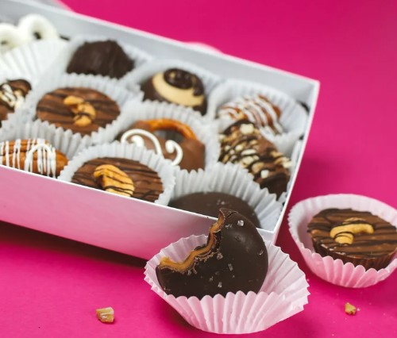

Welcome to our Sweet Shop
Our chocolates come in flavor profiles for everyone to love! Whether its sweet, salty, dark, milk, white, coated in caramel or covered in nuts, our handcrafted chocolates from Homemade Chocolates by Lily are designed to be savored, enjoyed, and asked for by name! Find your new guilty pleasure today! Come and visit our store! It will be our please!
It is estimated that currently 1 billion people eat chocolate every day. In 2020 alone, some chocolate brands saw triple digit growth online during the pandemic. In America, the average person eats about 12 pounds of chocolate per year, compared to 15 pounds for the average European. It’s also interesting to know that 43% of online shoppers stick to their favorite brands again and again & 49% of online chocolate purchasers want to know more about how their chocolate was sourced according to one Wool & Water Report. One must begin to wonder, then, why do so many people seem to love chocolate that much--aside from the super great taste, that is! So, what exactly makes chocolate so special? Well, for starters, because it is derived from a naturally occurring plant, chocolate is known to have some rather medicinal properties. According to science, eating chocolate not only tastes good but it can actually make you happy. We don’t need an excuse to reach for a piece of the sweet treat. Sampling the local chocolate is part of the travel experience! Here are seven countries that make the best chocolate.